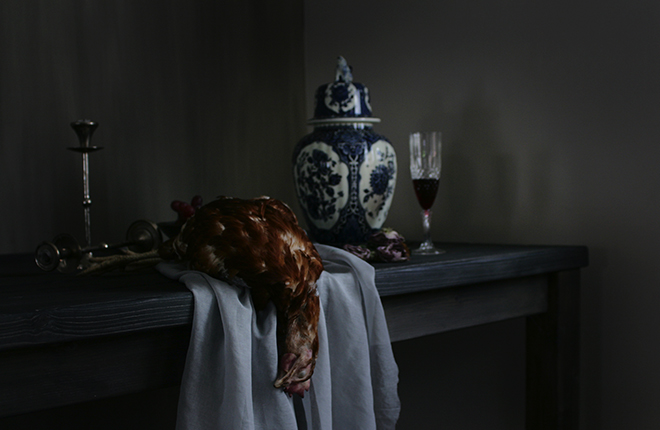
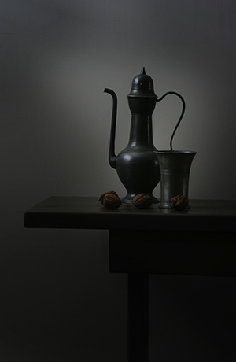
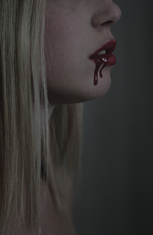
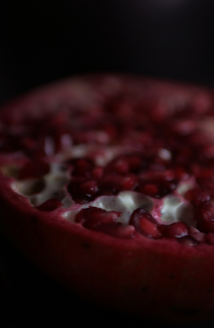
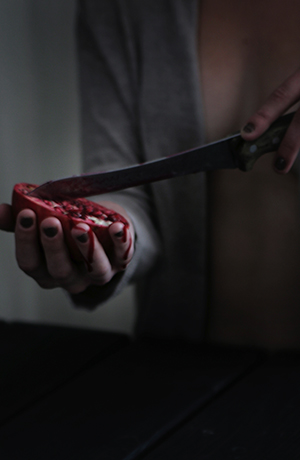
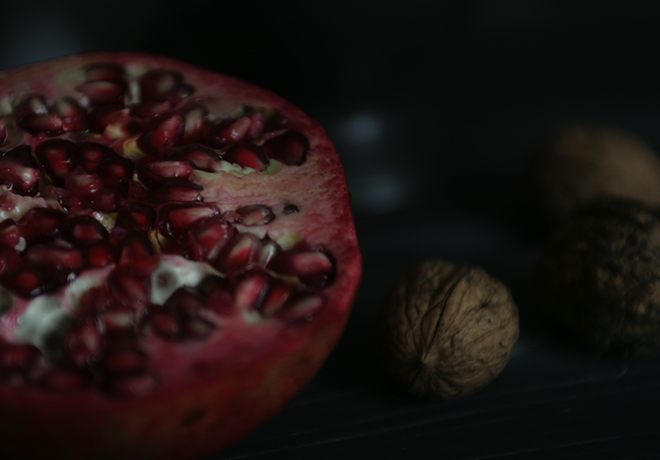
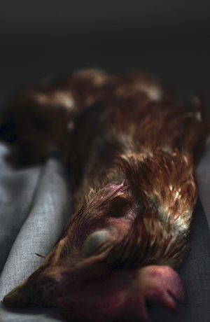
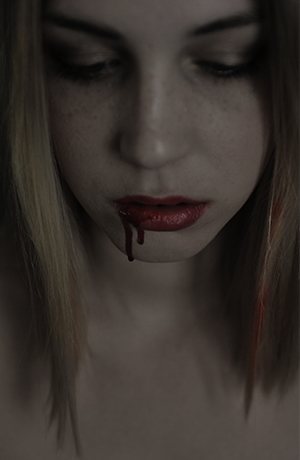

dark








dark
De fotoserie ‘Duister’ is gebaseerd op de schaduwzijdes van voedsel en de voedselproductie. Het is steeds lastiger de herkomst van voedsel te achterhalen en ook het zelf slachten van dieren is met taboes omgeven.
De fotoserie legt deze taboes bloot en pleit voor respect (voor) mens en dier.
Opdrachtgever: Nuit Blance night festival Amsterdam
Categorie: Stills, product, in opdracht
Concept, styling: Willemien van den Broek
Fotografie: Ester Tak
Model > Danika harmsen

© 2014 willemien van den broek